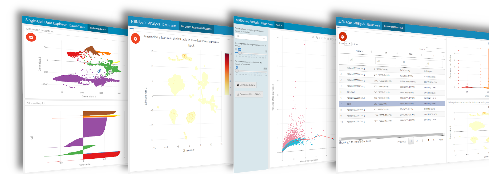

Abstract
The rapid development of NGS technologies enables the investigation of the transcriptome of thousands of cells in a single experiment. scRNA-seq allows to identify rare cell types and populations, to uncover gene regulatory networks, and to track the trajectories of distinct cell lineages in development. The extension i2dash.scrnaseq enables an enhanced user interactivity and contains simple but effective tools for the creation of an i2dashboard with focus on scRNA-seq data visualization and exploration. Read further information of the core i2dash package here.
Features of i2dash.scrnaseq:
- Usage of common single-cell classes “SingleCellExperiment” & “Seurat” for fast creation of components
- Useful and flexible plots with extended interactivity through Shiny widgets
- Pre-defined pages with focus on different aspects of scRNA-seq data
- Linked plots, which recalculate themselfes based on specific selections
Concept of the extensibility
The ability of i2dash to generate R Markdown code can be extended with additional packages. The figure below demonstrates the concept of extensibility. In order to develop a component or a page with a pre-defined layout and specific composition of components as an extension, the developer needs to provide a method and an R Markdown template. The method takes the i2dashboard object and the data relevant for the component. It validates and stores the data in a suitable data structure in a file (e.g. RDS file). Furthermore the method generates an R Markdown string based on a template for the component or page and extends the i2dashboard object. This package follows the concept of extensibility described in this i2dash vignette.

Installation:
# if i2dash is not installed: installinstall.packages("i2dash") install.packages("devtools") devtools::install_gitlab("loosolab/software/i2dash.scrnaseq", host="https://gitlab.gwdg.de/")
Where to start
Based on three common use-cases for single-cell data analysis you can explore the possibilities and features of the i2dash.scrnaseq extension. Note: The use-cases show an increasing degree of difficulty and complexity.
Use-cases:
-
This use-case shows how to build a SingleCellExperiment object from a count-matrix, calculate quality metrics and create a simple dashboard to visualize different quality aspects of an scRNA-seq dataset. Demo
-
The second use-case demonstrates how to build a dashboard, which enables the exploration of gene expression values and metadata coupled with reduced dimension plots. Mainly native tools and pre-defined pages from the i2dash.scrnaseq package are used. Demo
-
Visualized parameter selection for experts
The third use-case provides tools of i2dash.scrnaseq, which are useful during the process of data analysis but are not reasonable for the final report. The pre-defined pages enable the selection of features, the inspection of the normalisazion and the selection of optimal paramters for a dimensionality reduction. Demo
Further reading:
Documentation This page gives you an overview over all features containing in the i2dash.scrnaseq package.
Developer guide This tutorial explains how to build a customized componentor a pre-defined page from scratch and how to link the components of your page together.
How to cite
If you use i2dash or i2dash.scrnaseq in your work, please cite:
Ustjanzew A., Preussner J., Bentsen M., Kuenne C., and Looso M. i2dash: creation of flexible, interactive and web-based dashboards for visualization of omics-pipeline results. tba (2020)
Dependencies:
| Visualization | Data manipulation | Further |
|---|---|---|
| ComplexHeatmap | stringi | i2dash |
| plotly | methods | magrittr |
| ggplot2 | rlist | assertive.sets |
| shiny | data.table | assertive.types |
| shinyWidgets | tidyr | assertive.properties |
| ComplexHeatmap | dplyr | htmltools |
| knitr | tibble | |
| multipanelfigure | scran | |
| DT | scater | |
| kableExtra | SingleCellExperiment |